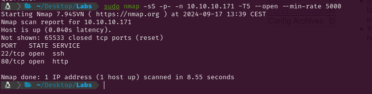

EASY - OPENADMIN
1. Recon
Nmap
I started with an Nmap scan to identify which services were running on the target machine. Since this was a Hack The Box (HTB) machine (controlled environment), I optimized the scan for speed by using the flags --min-rate 5000, -sS for a SYN scan, and -T5 for the highest timing template, making the scan significantly faster.

The scan revealed a couple of open ports:
- SSH on port 22
- HTTP on port 80
To get more detailed information, I followed up with a more thorough scan, using the service version detection flag (-sV) and the Nmap Scripting Engine (NSE) with default scripts (-sC). I also exported the results to a file so I could quickly reference them later.

This didn’t reveal anything exploitable (yet), so I switched my focus to exploring the HTTP service to see if the web had any vulnerabilities.
Website - 80 TCP
I began by running WhatWeb to identify the technologies and versions used on the website to spot vulnerabilities.

Next, I performed a directory fuzzing scan to uncover hidden directories or endpoints on the server. For this, I used Gobuster. The scan revealed a few directories: /artwork, /sierra, and /music.

While browsing through /music, I found another interesting directory: /ona. This led me to what looked like an admin panel ("Create an Account" button).

The version of the admin panel was displayed on the page, so I searched for known vulnerabilities tied to that specific version.

2. Gaining Access
The version had a Remote Code Execution (RCE) vulnerability. A quick Google search led me to a GitHub repository containing an exploit script. The script automated the entire process for me, making it easier exploit the RCE.


I downloaded the Python script from the GitHub repo and ran it, which gave me access to the system as the www-data user.

3. Privilege Escalation
Jimmy
Once I had access to the file system I found a file that contained clear-text credentials. I also discovered two usernames: jimmy and joanna.

Using the credentials I found, I was able to log in to the server as jimmy via SSH.

Joanna
Exploring the web directories I discovered a local virtual host running on port 52846 wich belonged to the user joanna.

I also found that /var/www/internal was owned by the group internal and the user jimmy.
Exploring the internal folder, I found that /main.php printed the joanna´s RSA key. Using curl, I sent a GET request to the virtual host and managed to extract joanna’s ****RSA key.

While trying to connect with that key to the user joanna through SSH, I was prompted to enter the passphrase for the RSA key.

To crack the passphrase, I converted the key into a hash format using ssh2john and then ran it through John the Ripper with the rockyou.txt wordlist. After a bit of brute-forcing, I successfully retrieved the passphrase.


Having the passphrase I could get access to the user joanna and capture the system flag.

Root
I checked sudo permissions and saw that joanna had the ability to use nano as root to edit the file /opt/priv.

I executed sudo -u root nano /opt/priv and then used the Ctrl+R and Ctrl+X key combination within nano to execute commands as root. I gave /bin/bash root-level permissions, which allowed me to spawn a root shell and capture the root flag.